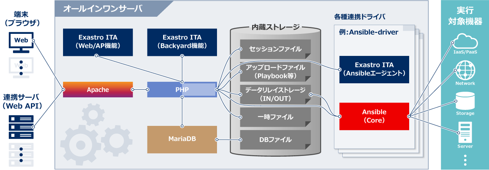
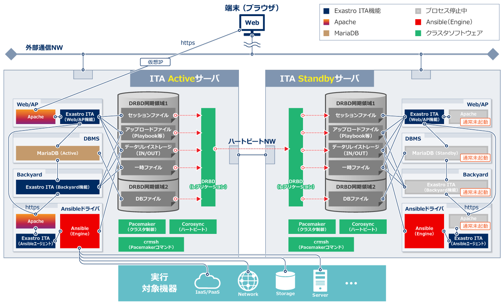
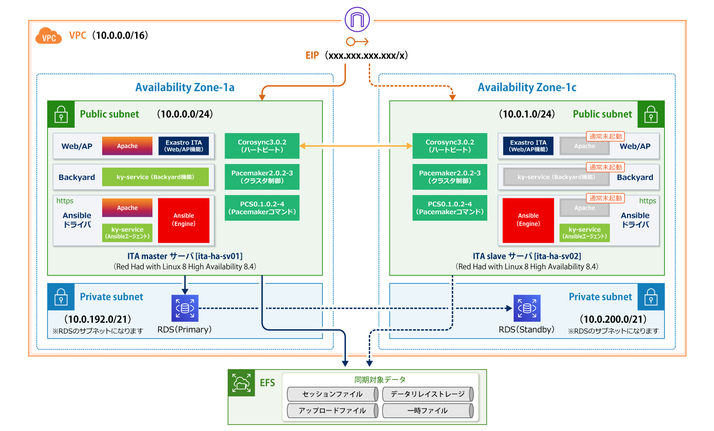
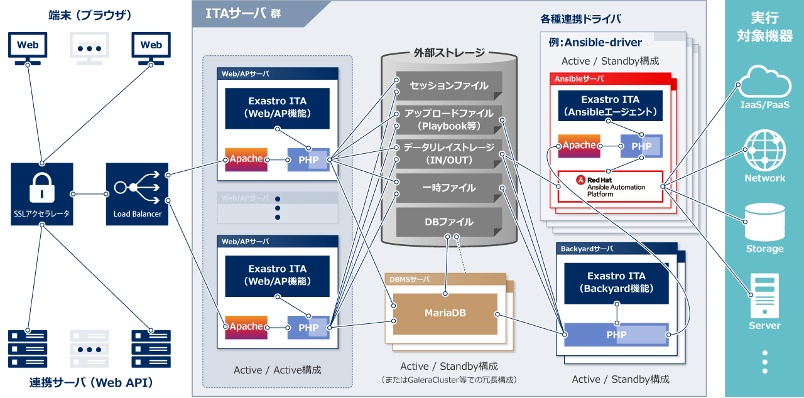
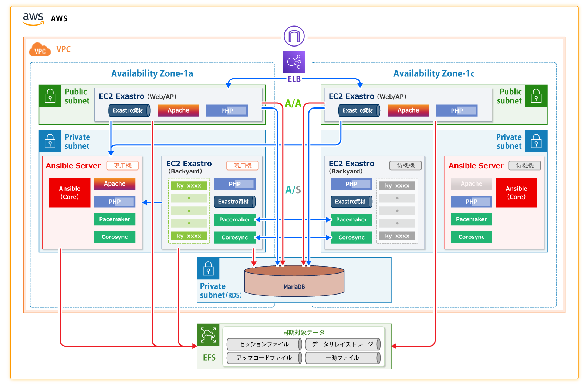

Exastro IT Automation のデプロイ例
オールインワン構成

ハイアベイラビリティ構成
オールインワン型HA同期構成

オールインワン型HA構成(AWS)

サーバ分散型HA構成

サーバ分散型HA構成(AWS)

Exastro IT Automation を導入しよう
IT Automationのインストール方法です。オールインワン（Online,Offline,Version up,Docker）、ハイアベイラビリティ（オールインワン型HA同期構成,サーバ分散型HA構成）の中から環境に合った方法を選択してください。
オールインワン構成
オンラインインストール
お手持ちの環境に IT Automationをすぐにインストールするためのインストールマニュアルです。
RedHat系Linuxディストリビューションに対応しており、インターネットに接続できる必要があります。
インストール完了後、下記の IT Automationクイックスタートを始めれば、すぐに IT Automationの魅力的なインターフェースを体験いただくことが可能です。
オフラインインストール
お手持ちの環境によっては、外部との通信を制限されている場合がございます。
このような環境下の場合でも IT Automationをご利用いただけるよう、オフラインインストール手順をご紹介いたします。
コンテナ インストール

お手持ちのコンテナ環境にIT Automationをすぐに起動できます。
インターネットに接続できる必要があります。
コンテナ起動後、下記の IT Automationクイックスタートを始めれば、
すぐに IT Automationの魅力的なインターフェースを体験いただくことが可能です。
-
- Step - 1 :コンテナの起動
-
Docker
# docker run --privileged --add-host=exastro-it-automation:127.0.0.1 -d -p 8080:80 -p 10443:443 --name exastro01 exastro/it-automation:x.x.x-ja
Podman
# podman run --privileged --add-host=exastro-it-automation:127.0.0.1 -d -p 8080:80 -p 10443:443 --name exastro01 docker.io/exastro/it-automation:x.x.x-ja
※ポート番号(8080,10443)とバージョン(x.x.x)は適宜変更してください。
-
- Step - 2 :Exastro IT Automationコンソールにアクセス
-
http://[Container-Host-IP]:8080 or https://[Container-Host-IP]:10443
-
- Step - 3 :ログイン
-
ログイン画面が表示されたら、指定のログインID、初期パスワードを入力して、[ログイン]ボタンをクリックしてください。
・ログインID ： administrator
・初期パスワード ： password※インストール後に初めてログインした場合は、「パスワード変更画面」に遷移します。
※パスワード変更画面から、初期パスワードを変更してください。
-
- Step - 4 :コンテナ プロダクション向け設定
-
プロダクション環境においては、要件に合わせて以下のような追加の考慮が必要になります。
・データの永続化
・Systemdによるサービス化
・TLS (SSL) への対応
・Docker Composeの活用詳細な説明はGitHubのREADMEを参照ください。
-
- 注意事項
-
イメージの詳細はDockerHubのREADMEを参照ください。
ハイアベイラビリティ構成
オールインワン型HA同期構成
IT Automationでは、オンラインまたはオフラインのインストール手順を進めると、同一サーバ上に IT Automationの全機能がオールインワンで配置されます。
IT Automationオールインワンインストール済サーバ2台とOSS製品群を組み合わせて、HAクラスタを構成することで、単一サーバでは実現できない可用性・信頼性の高いIT Automationサーバを構築することができます。
本マニュアルでは、共有ストレージが不要で、サーバ間のデータ連携を可能とする、オールインワン型HA同期構成のインストール手順をご紹介いたします。
オールインワン型HA構成(AWS)
IT Automationは、同一サーバ上に 全機能をオールインワン(※)で配置することが可能となっており、一部機能をAWSのマネージドサービス(EFS、RDS)に置き換えて構成することが可能となっております。
※詳細はオールインワン構成のセクションを参照ください。
一部機能をAWSのマネージドサービスに置き換えたIT Automationオールインワンインストール済サーバ2台とOSS製品群を組み合わせて、HAクラスタを構成することで、単一サーバでは実現できない可用性・信頼性の高いIT Automationサーバを構築することができます。
本マニュアルでは、共有ストレージとしてEFS、データベースとしてRDS(MariaDB)を利用した、オールインワン型HA構成のインストール手順をご紹介いたします。
サーバ分散型HA構成
エンタープライズでご利用の際にはしばしば高可用なデプロイが求められます。
IT Automationの機能ごとにサーバ(Web/AP、DBMS、Backyard、各種連携ドライバ)を分散し、共有ストレージに連携データを配置した環境をベースに、ユーザが柔軟なHA構成を組むことが可能です。
本マニュアルでは、サーバ分散型HA構成のベースとなるIT Automation機能の各サーバのマニュアルインストール手順をご紹介いたします。(ロードバランサやHAクラスタの設定内容・構築手順はユーザ側で準備する必要があります)
サーバ分散型HA構成(AWS)
IT Automationは機能ごとにサーバ(Web/AP、RDS、Backyard、連携ドライバ)を分散し、共有ストレージ(EFS)に連携データを配置した環境をベースに、ユーザが柔軟なHA構成を組むことが可能です。※
※詳細はサーバ分散型HA構成のセクションを参照ください。
本マニュアルでは、AWSを使用したサーバ分散型HA構成のベースとなるIT Automation機能の各サーバのマニュアルインストール手順をご紹介いたします。